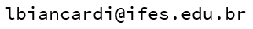

GitHub Luciano B. Fiorino
Artigo
Reprodutibilidade e Extensibilidade de Datasets de Tráfego de Rede: um estudo da replicação de traces de pacotes. (SBESC 2021 - WiP Track) https://doi.org/10.5753/sbesc_estendido.2021.18500
Experimento de replicação de traces de pacotes contidos em arquivos PCAP de um dataset da literatura
Este experimento teve como objetivo investigar o uso de ferramentas abertas para replicação de traces de pacotes de um dataset da litetatura, a fim de coletar novas métricas de para os traces originais. A coleta de novos dados para os mesmos traces podem gerar um novo datasets ou estender o dataset original, permitindo comparar a relevância das novas métricas com as originalmente coletadas em algoritmos de aprendizado de máquina.
Dataset utilizado: NDSec-1
https://www2.hs-fulda.de/NDSec/NDSec-1/
https://www2.hs-fulda.de/NDSec/NDSec-1/Files/
O dataset NDSec-1 é formado por 04 (quatro) grupos de traces contendo vários tipos de tráfegos. Para o experimento foi escolhido o grupo Botnet.
Tráfegos extraídos do dataset
Os arquivos PCAP abaixo contém os tráfegos extraídos para o experimento de forma estratificada, onde um arquivo PCAP foi gerado para cada tipo de tráfego.
- botnet_SYN-FLOOD.pcap : Tráfego de ataque SYN-Flood;
- botnet_NORMAL.pcap : Tráfego Normal HTTP unidirecional.
- bidir_botnet_NORMAL.pcap : Tráfego Normal HTTP bidirecional.
Tráfegos modificados
Os arquivos PCAP abaixo contém os tráfegos extraídos e modificados para o experimento também de forma estratificada.
- botnet_SYN-FLOOD_syn_mac-ip-mod_fix-chksum.pcap : Pacotes SYN do tráfego SYN-Flood com endereços MAC e IP alterados, e checksums recalculados;
- botnet_NORMAL_mac-ip-httphost-mod_fix-chksum.pcap : Tráfego Normal unidirecional com MAC, IP e HTTP host/referer alterados, e checksums recalculados
- botnet_NORMAL_mac-ip-httphost-mod_fix-chksum_requests_0.gor : Arquivo gerado com a ferramenta GoReplay contendo as requisições HTTP do tráfego Normal a partir do pcap unidirecional.
- bidir_botnet_NORMAL_mac-ip-httphost_mod_fix_chksum.pcap : Tráfego Normal bidirecional com MAC, IP e HTTP host/referer alterados, e checksums recalculados
- bidir_botnet_NORMAL_mac-ip-httphost_mod_fix_chksum_requests_0.gor : Arquivo gerado com a ferramenta GoReplay contendo as requisições HTTP do tráfego Normal a partir do pcap bidirecional.
Capturas dos Tráfegos Replicados
Os arquivos PCAP abaixo contém as capturas das replicações dos tráfegos modificados com as ferramentas utilizadas no experimento.
- botnet_NORMAL_replay_goreplay.pcap : Tráfego Normal unidirecional replicado com a ferramenta GoReplay
- bidir_botnet_NORMAL_replay_goreplay.pcap : Tráfego Normal bidirecional replicado com a ferramenta GoReplay
- botnet_SYN-FLOOD_replay_gophercap.pcap : Tráfego SYN-Flood replicado com a ferramenta GopherCap;
- botnet_SYN-FLOOD_replay_moongen.pcap : Tráfego SYN-Flood replicado com a ferramenta MoonGen;
- botnet_SYN-FLOOD_replay_tcpreplay.pcap : Tráfego SYN-Flood replicado com a ferramenta Tcpreplay.
Códigos Python
A seguir são disponibilizadas os códigos utilizados em cada passo do experimento.
- edit_packet_timestamp.py : Script para
editar a precisão (casas decimais) do timestamp para extrair os pacotes corretamente.
Este script altera as casas decimais do PCAP original de 6 para 3 casas, pois nas amostras do dataset a precisão está com 3 casas deciamais. Um novo arquivo PCAP para o script do item 2. -
botnet_extract_normal_syn-flood.py : Script para extrair os tráfegos originais Normal/Syn-Flood do dataset NDSec-1 e gerar os arquivos PCAP para replicação.
Este script extrai do PCAP gerado no item 1 os números dos frames dos tráfegos de interesse e, posteriormente, extrais os pacotes correspondentes aos números dos frames do PCAP original. -
edit_mac_ip_pcap.py : Script para alterar os endereços IP e MAC dos pacotes;
-
edit_http_request_pcap.py : Script para editar os campos Host e Referer do cabeçalho HTTP do tráfego Normal;
-
agent-gnocchi-offline.py : Script para coletar as métricas de nuvem no banco de dados Gnocchi;
Para corrigir os checksums IP/TCP dos pacotes contidos nos arquivo PCAPs gerados, foi utilizada a ferramenta tcprewrite.
# Fix checksum
$ tcprewrite -C -i <INFILE.pcap> -o <OUTFILE.pcap>
Dataset de Telemetria Gerado
Dataset gerado a partir das coletas das métricas do serviço de telemetria OpenStack. A política de coleta do serviço de telemetria estava configurada com granularidade de 5 segundos. Dessa forma, cada amostra do dataset gerado corresponde a coletas das métricas a cada 5 segundos.
Para compor o dataset foram considerados os dados coletados a partir da replicação dos traces com as ferramentas GoReplay e Tcpreplay.
-
telemetry_dataset_replay.csv : Dataset de telemetria;
-
telemetry_normal_goreplay.csv : Telemetria do tráfego Normal replicado com a ferramenta GoReplay;
-
telemetry_syn-flood_gophercap.csv : Telemetria do tráfego SYN-Flood replicado com a ferramenta GopherCap;
-
telemetry_syn-flood_moongen.csv : Telemetria do tráfego SYN-Flood replicado com a ferramenta Moongen;
-
telemetry_syn-flood_tcpreplay.csv : Telemetria do tráfego SYN-Flood replicado com a ferramenta Tcpreplay.
2022